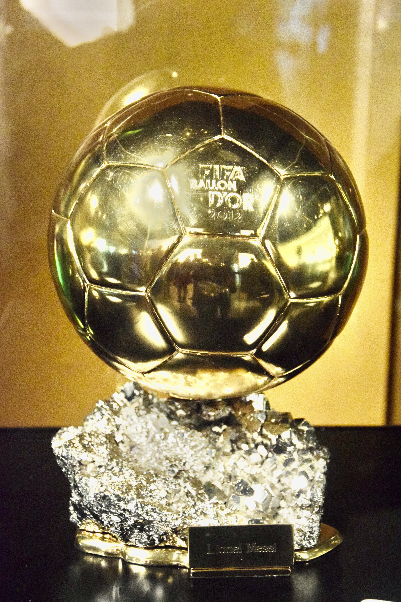

A Bola de Ouro, conhecida internacionalmente como Ballon d’Or, é uma das maiores referências de reconhecimento individual no futebol mundial. Criada pela revista francesa France Football, a premiação atravessou gerações, consagrou jogadores históricos e ampliou seu alcance até se transformar em uma cerimônia dedicada a diferentes áreas do futebol masculino e feminino.
O troféu principal continua sendo o mais cobiçado, mas a premiação deixou de reconhecer apenas o melhor jogador. Os prêmios Kopa, Yashin, Gerd Müller, Johan Cruyff e Sócrates, além das distinções para os melhores clubes, representam uma evolução importante na maneira de valorizar o desempenho esportivo e o impacto dos profissionais envolvidos no futebol.
Na edição de 2026, realizada em 26 de outubro, em Londres, foram entregues 13 premiações distribuídas entre seis categorias masculinas, seis femininas e uma distinção de caráter social. A cerimônia marcou os 70 anos da criação da Bola de Ouro e foi realizada pela primeira vez na capital inglesa.
Como surgiu a premiação
A história da Bola de Ouro começou em 1956, quando a France Football criou uma eleição para reconhecer o melhor jogador europeu. O primeiro vencedor foi o inglês Stanley Matthews, que defendia o Blackpool.
Inicialmente, o prêmio tinha uma limitação importante: apenas jogadores europeus eram elegíveis. Isso excluía grandes nomes de outros continentes, mesmo quando demonstravam superioridade técnica e acumulavam títulos internacionais.
A mudança começou em 1995, quando jogadores de qualquer nacionalidade passaram a poder disputar o troféu, desde que atuassem em clubes europeus. O primeiro vencedor sob essa regra foi George Weah, da Libéria, que representou Paris Saint-Germain e Milan naquele ano.
Em 2007, a premiação eliminou a restrição geográfica, permitindo que jogadores de qualquer campeonato fossem considerados.
Outro período importante ocorreu entre 2010 e 2015, quando a France Football e a FIFA unificaram seus prêmios individuais na chamada Bola de Ouro FIFA. A parceria terminou e, a partir de 2016, o Ballon d’Or voltou a ser concedido separadamente pela revista francesa.
A separação também ajuda a compreender a diferença entre os dois grandes reconhecimentos individuais do futebol. Enquanto a France Football organiza a Bola de Ouro, a FIFA possui sua própria trajetória de premiações, com diferentes formatos e critérios de escolha ao longo das décadas. Essa história está reunida na lista dos melhores jogadores do mundo eleitos pela FIFA, que apresenta os vencedores e a evolução da premiação da entidade máxima do futebol.
Desde 2024, a cerimônia passou a ser organizada em parceria com a UEFA, enquanto a France Football permanece responsável pelo sistema de votação.
Quais são todos os prêmios da Bola de Ouro
A premiação reúne diferentes reconhecimentos individuais e coletivos. Algumas categorias existem há décadas, enquanto outras foram incorporadas para acompanhar a evolução do futebol.
As 13 honrarias entregues na edição de 2026 foram:
- Bola de Ouro masculina — melhor jogador do mundo.
- Bola de Ouro feminina — melhor jogadora do mundo.
- Jovem Talento masculino e feminino, Troféu Kopa.
- Jovem Talento feminino, Troféu Kopa.
- Goleiro do Ano masculino, Troféu Yashin.
- Goleira do Ano feminina, Troféu Yashin.
- Atacante do Ano masculino, conhecido historicamente como Troféu Gerd Müller.
- Atacante do Ano feminino, associado ao Troféu Gerd Müller.
- Treinador do Ano masculino, Troféu Johan Cruyff.
- Treinador do Ano feminino, Troféu Johan Cruyff.
- Clube do Ano masculino.
- Clube do Ano feminino.
- Prêmio Sócrates — reconhecimento por iniciativas sociais e humanitárias.
Cada distinção possui características próprias. Algumas dependem diretamente da votação de especialistas, outras utilizam indicadores objetivos, como gols marcados, enquanto o Prêmio Sócrates considera o impacto de projetos realizados fora dos gramados.
O prêmio mais tradicional
A Bola de Ouro masculina representa a origem da premiação. O troféu reconhece o jogador que apresentou o melhor conjunto de atuações individuais, contribuições decisivas, resultados coletivos e comportamento esportivo durante o período de avaliação.
Ao longo de sua história, a distinção consagrou atletas de diferentes posições, estilos e nacionalidades.
Maiores vencedores e nomes históricos da Bola de Ouro masculina:
- 1º Lionel Messi — 8 títulos: 2009, 2010, 2011, 2012, 2015, 2019, 2021 e 2023.
- 2º Cristiano Ronaldo — 5 títulos: 2008, 2013, 2014, 2016 e 2017.
Outros grandes vencedores da história:
- Alfredo Di Stéfano
- Johan Cruyff
- Franz Beckenbauer
- Michel Platini
- Marco van Basten
- Ronaldo Nazário
- Zinedine Zidane
- Ronaldinho Gaúcho
- Kaká
Michel Platini, Johan Cruyff e Marco van Basten possuem três Bolas de Ouro cada.
Um detalhe importante é que a premiação não favorece obrigatoriamente atacantes. O goleiro Lev Yashin venceu em 1963, Franz Beckenbauer foi premiado em 1972 e 1976, e o volante Rodri conquistou o troféu em 2024.
Na edição de 2026, Harry Kane venceu pela primeira vez, encerrando um intervalo de 25 anos sem um inglês conquistar o prêmio. O vencedor anterior do país havia sido Michael Owen, em 2001.
Todos os vencedores da Bola de Ouro masculina (1956 a 2026)
- 1956 — Stanley Matthews (Blackpool)
- 1957 — Alfredo Di Stéfano (Real Madrid)
- 1958 — Raymond Kopa (Real Madrid)
- 1959 — Alfredo Di Stéfano (Real Madrid)
- 1960 — Luis Suárez Miramontes (Barcelona)
- 1961 — Omar Sívori (Juventus)
- 1962 — Josef Masopust (Dukla Praga)
- 1963 — Lev Yashin (Dínamo de Moscou)
- 1964 — Denis Law (Manchester United)
- 1965 — Eusébio (Benfica)
- 1966 — Bobby Charlton (Manchester United)
- 1967 — Flórián Albert (Ferencváros)
- 1968 — George Best (Manchester United)
- 1969 — Gianni Rivera (Milan)
- 1970 — Gerd Müller (Bayern de Munique)
- 1971 — Johan Cruyff (Ajax)
- 1972 — Franz Beckenbauer (Bayern de Munique)
- 1973 — Johan Cruyff (Ajax/Barcelona)
- 1974 — Johan Cruyff (Barcelona)
- 1975 — Oleg Blokhin (Dínamo de Kiev)
- 1976 — Franz Beckenbauer (Bayern de Munique)
- 1977 — Allan Simonsen (Borussia Mönchengladbach)
- 1978 — Kevin Keegan (Hamburgo)
- 1979 — Kevin Keegan (Hamburgo)
- 1980 — Karl-Heinz Rummenigge (Bayern de Munique)
- 1981 — Karl-Heinz Rummenigge (Bayern de Munique)
- 1982 — Paolo Rossi (Juventus)
- 1983 — Michel Platini (Juventus)
- 1984 — Michel Platini (Juventus)
- 1985 — Michel Platini (Juventus)
- 1986 — Igor Belanov (Dínamo de Kiev)
- 1987 — Ruud Gullit (PSV/Milan)
- 1988 — Marco van Basten (Milan)
- 1989 — Marco van Basten (Milan)
- 1990 — Lothar Matthäus (Inter de Milão)
- 1991 — Jean-Pierre Papin (Olympique de Marseille)
- 1992 — Marco van Basten (Milan)
- 1993 — Roberto Baggio (Juventus)
- 1994 — Hristo Stoichkov (Barcelona)
- 1995 — George Weah (PSG/Milan)
- 1996 — Matthias Sammer (Borussia Dortmund)
- 1997 — Ronaldo (Barcelona/Inter de Milão)
- 1998 — Zinedine Zidane (Juventus)
- 1999 — Rivaldo (Barcelona)
- 2000 — Luís Figo (Barcelona/Real Madrid)
- 2001 — Michael Owen (Liverpool)
- 2002 — Ronaldo (Inter de Milão/Real Madrid)
- 2003 — Pavel Nedvěd (Juventus)
- 2004 — Andriy Shevchenko (Milan)
- 2005 — Ronaldinho Gaúcho (Barcelona)
- 2006 — Fabio Cannavaro (Juventus/Real Madrid)
- 2007 — Kaká (Milan)
- 2008 — Cristiano Ronaldo (Manchester United)
- 2009 — Lionel Messi (Barcelona)
- 2010 — Lionel Messi (Barcelona)
- 2011 — Lionel Messi (Barcelona)
- 2012 — Lionel Messi (Barcelona)
- 2013 — Cristiano Ronaldo (Real Madrid)
- 2014 — Cristiano Ronaldo (Real Madrid)
- 2015 — Lionel Messi (Barcelona)
- 2016 — Cristiano Ronaldo (Real Madrid)
- 2017 — Cristiano Ronaldo (Real Madrid)
- 2018 — Luka Modrić (Real Madrid)
- 2019 — Lionel Messi (Barcelona)
- 2020 — Premiação cancelada devido à pandemia de Covid-19
- 2021 — Lionel Messi (Paris Saint-Germain)
- 2022 — Karim Benzema (Real Madrid)
- 2023 — Lionel Messi (Paris Saint-Germain/Inter Miami)
- 2024 — Rodri (Manchester City)
- 2025 — Ousmane Dembélé (Paris Saint-Germain)
- 2026 — Harry Kane (Bayern de Munique)
Clubes com mais jogadores vencedores na história
O Real Madrid lidera o ranking histórico de clubes com mais jogadores diferentes que conquistaram a Bola de Ouro masculina, com oito atletas premiados desde a criação do troféu, em 1956. O levantamento considera apenas os jogadores que conquistaram o prêmio principal enquanto representavam cada clube, independentemente de quantas vezes receberam a distinção. A relação contempla todos os 22 clubes que tiveram pelo menos um vencedor até a edição de 2026.
Ranking completo de clubes com mais jogadores premiados:
- Real Madrid (Espanha) — 8 jogadores
- Barcelona (Espanha) — 6 jogadores
- Juventus (Itália) — 6 jogadores
- Milan (Itália) — 6 jogadores
- Bayern de Munique (Alemanha) — 4 jogadores
- Manchester United (Inglaterra) — 4 jogadores
- Dínamo de Kiev (Ucrânia) — 2 jogadores
- Inter de Milão (Itália) — 2 jogadores
- Paris Saint-Germain (França) — 2 jogadores
- Ajax (Países Baixos) — 1 jogador
- Benfica (Portugal) — 1 jogador
- Blackpool (Inglaterra) — 1 jogador
- Borussia Dortmund (Alemanha) — 1 jogador
- Borussia Mönchengladbach (Alemanha) — 1 jogador
- Dínamo de Moscou (Rússia) — 1 jogador
- Dukla Praga (República Tcheca) — 1 jogador
- Ferencváros (Hungria) — 1 jogador
- Hamburgo (Alemanha) — 1 jogador
- Inter Miami (Estados Unidos) — 1 jogador
- Liverpool (Inglaterra) — 1 jogador
- Manchester City (Inglaterra) — 1 jogador
- Olympique de Marseille (França) — 1 jogador
A liderança do Real Madrid fica ainda mais expressiva quando se observa a quantidade total de troféus. O clube espanhol soma 12 Bolas de Ouro masculinas, mesmo número do Barcelona. Juventus e Milan aparecem com oito conquistas cada, enquanto o Bayern de Munique chegou a seis com o título de Harry Kane em 2026.
Bola de Ouro feminina
O prêmio para as mulheres foi criado em 2018, ampliando o reconhecimento internacional das principais protagonistas do futebol feminino.
A primeira vencedora foi a norueguesa Ada Hegerberg, destaque do Lyon.
A espanhola Alexia Putellas conquistou os troféus de 2021 e 2022, enquanto sua compatriota Aitana Bonmatí estabeleceu uma sequência de três títulos consecutivos entre 2023 e 2025.
Em 2026, Alexia Putellas voltou a conquistar o prêmio e alcançou sua terceira Bola de Ouro, igualando Aitana Bonmatí no topo do ranking histórico feminino.
A premiação feminina segue os mesmos três critérios centrais utilizados no futebol masculino: desempenho individual, conquistas coletivas e fair play.
O crescimento da categoria também abriu espaço para distinções específicas destinadas às goleiras, jovens jogadoras, treinadoras, artilheiras e equipes femininas.
Todas as vencedoras da Bola de Ouro feminina (2018 a 2026):
- 2018 — Ada Hegerberg (Lyon)
- 2019 — Megan Rapinoe (Reign FC)
- 2020 — Premiação cancelada devido à pandemia de Covid-19
- 2021 — Alexia Putellas (Barcelona)
- 2022 — Alexia Putellas (Barcelona)
- 2023 — Aitana Bonmatí (Barcelona)
- 2024 — Aitana Bonmatí (Barcelona)
- 2025 — Aitana Bonmatí (Barcelona)
- 2026 — Alexia Putellas (Barcelona/London City Lionesses)
Troféu Kopa: o prêmio destinado aos jovens talentos
O prêmio foi introduzido em 2018 para reconhecer jogadores com menos de 21 anos que se destacam no futebol profissional, tendo como primeiro vencedor Kylian Mbappé.
O nome homenageia Raymond Kopa, ex-jogador francês que conquistou a Bola de Ouro de 1958 e marcou época no Real Madrid.
Uma das particularidades do prêmio é seu sistema de votação. Diferentemente da Bola de Ouro principal, o reconhecimento aos jovens talentos é decidido por um júri formado por antigos vencedores do Ballon d’Or.
O Troféu Kopa feminino estreou em 2025, tendo Vicky López, do Barcelona, como primeira vencedora. A espanhola repetiu a conquista em 2026.
A categoria representa um reconhecimento importante para atletas que já demonstram qualidade internacional antes de atingir a maturidade esportiva.
Todos os vencedores do Troféu Kopa masculino (2018 a 2026)
- 2018 — Kylian Mbappé (Paris Saint-Germain)
- 2019 — Matthijs de Ligt (Ajax/Juventus)
- 2020 — Premiação cancelada
- 2021 — Pedri (Barcelona)
- 2022 — Gavi (Barcelona)
- 2023 — Jude Bellingham (Borussia Dortmund/Real Madrid)
- 2024 — Lamine Yamal (Barcelona)
- 2025 — Lamine Yamal (Barcelona)
- 2026 — Lamine Yamal (Barcelona)
Todas as vencedoras do Troféu Kopa feminino (2025 a 2026)
- 2025 — Vicky López (Barcelona)
- 2026 — Vicky López (Barcelona)
O reconhecimento aos melhores goleiros
O Troféu Yashin surgiu em 2019 como uma premiação específica para goleiros.
Seu nome homenageia Lev Yashin, lendário jogador soviético que permanece como o único goleiro vencedor da Bola de Ouro masculina, conquistada em 1963.
O primeiro vencedor do prêmio especializado foi o brasileiro Alisson Becker, então jogador do Liverpool.
A versão feminina foi introduzida em 2025. Hannah Hampton, goleira do Chelsea e da seleção inglesa, conquistou a primeira edição.
Todos os vencedores do Troféu Yashin masculino (2019 a 2026):
- 2019 — Alisson Becker (Liverpool)
- 2020 — Premiação cancelada
- 2021 — Gianluigi Donnarumma (Milan/Paris Saint-Germain)
- 2022 — Thibaut Courtois (Real Madrid)
- 2023 — Emiliano Martínez (Aston Villa)
- 2024 — Emiliano Martínez (Aston Villa)
- 2025 — Gianluigi Donnarumma (Paris Saint-Germain/Manchester City)
- 2026 — Unai Simón (Athletic Club)
Todas as vencedoras do Troféu Yashin feminino (2025 a 2026):
- 2025 — Hannah Hampton (Chelsea)
- 2026 — Cata Coll (Barcelona)
A premiação dos artilheiros
O prêmio destinado aos atacantes surgiu em 2021 e passou a ser conhecido como Troféu Gerd Müller, em homenagem ao histórico goleador alemão.
Seu objetivo é reconhecer a excelência na marcação de gols, considerando os números oficiais produzidos por clube e seleção durante o período de referência.
Ao contrário da Bola de Ouro principal, a premiação está diretamente vinculada à produção estatística ofensiva.
Robert Lewandowski venceu as duas primeiras edições, em 2021 e 2022.
Em 2024, Harry Kane e Kylian Mbappé dividiram a conquista após terminarem empatados com 52 gols cada.
No futebol feminino, a categoria estreou em 2025, com a polonesa Ewa Pajor, do Barcelona, como primeira vencedora.
A principal diferença entre esse reconhecimento e a Bola de Ouro tradicional está no critério: ser o maior artilheiro não significa automaticamente ser escolhido o melhor jogador do mundo.
Todos os vencedores do Troféu Gerd Müller masculino (2021 a 2026):
- 2021 — Robert Lewandowski (Bayern de Munique); 69 gols.
- 2022 — Robert Lewandowski (Bayern de Munique/Barcelona); 57 gols.
- 2023 — Erling Haaland (Manchester City); 56 gols.
- 2024 — Harry Kane (Bayern de Munique); e Kylian Mbappé (Paris Saint-Germain/Real Madrid); 52 gols.
- 2025 — Viktor Gyökeres (Sporting/Arsenal); 63 gols.
- 2026 — Harry Kane (Bayern de Munique); 73 gols.
Todas as vencedoras do Troféu Gerd Müller feminino (2025 a 2026):
- 2025 — Ewa Pajor (Barcelona)
- 2026 — Charlyn Corral (Pachuca)
O prêmio aos melhores treinadores
Introduzido em 2024, o reconhecimento aos melhores treinadores homenageia Johan Cruyff, que leva o nome do prêmio, um dos personagens mais influentes da história do futebol.
Cruyff conquistou três Bolas de Ouro como jogador e também construiu uma trajetória marcante à frente do Barcelona.
O prêmio aos treinadores considera aspectos como desempenho coletivo, conquistas, organização tática, liderança, desenvolvimento dos atletas e capacidade de potencializar o rendimento da equipe.
Na primeira edição masculina, Carlo Ancelotti foi escolhido pelo trabalho realizado no Real Madrid. Na categoria feminina, Emma Hayes conquistou o prêmio.
A criação dessa categoria ampliou o reconhecimento aos profissionais responsáveis pela construção do modelo de jogo e pelos resultados das equipes.
Todos os vencedores do Troféu Johan Cruyff.
Masculino (2024 a 2026):
- 2024 — Carlo Ancelotti (Real Madrid)
- 2025 — Luis Enrique (Paris Saint-Germain)
- 2026 — Luis de la Fuente (seleção da Espanha)
Feminino (2024 a 2026):
- 2024 — Emma Hayes (Chelsea/seleção dos Estados Unidos)
- 2025 — Sarina Wiegman (seleção da Inglaterra)
- 2026 — Pere Romeu (Barcelona)
Prêmio de Clube do Ano: o reconhecimento coletivo
Nem todos os prêmios da cerimônia são individuais. O Clube do Ano valoriza o desempenho coletivo das equipes ao longo da temporada.
A avaliação envolve resultados esportivos, títulos conquistados, qualidade das atuações e capacidade de superar expectativas.
A premiação masculina começou em 2021, quando o Chelsea foi escolhido.
No futebol feminino, o prêmio foi criado em 2023. O Barcelona venceu as duas primeiras edições, em 2023 e 2024.
Esse prêmio também demonstra que a cerimônia não se limita à consagração de estrelas individuais. O trabalho de um elenco, sua organização e os resultados conquistados durante a temporada também possuem espaço próprio.
Todos os vencedores do Clube do Ano.
Masculino (2021 a 2026):
- 2021 — Chelsea (Inglaterra)
- 2022 — Manchester City (Inglaterra)
- 2023 — Manchester City (Inglaterra)
- 2024 — Real Madrid (Espanha)
- 2025 — Paris Saint-Germain (França)
- 2026 — Paris Saint-Germain (França)
Feminino (2023 a 2026):
- 2023 — Barcelona (Espanha)
- 2024 — Barcelona (Espanha)
- 2025 — Arsenal (Inglaterra)
- 2026 — Barcelona (Espanha)
Prêmio Sócrates: quando o futebol ultrapassa o campo
A honraria foi criada em 2022 e possui um significado diferente das demais categorias.
Em vez de reconhecer exclusivamente o desempenho esportivo, a distinção valoriza iniciativas humanitárias, projetos de solidariedade e ações capazes de produzir impacto social.
O nome homenageia Sócrates Brasileiro Sampaio de Souza Vieira de Oliveira, o Doutor Sócrates, que se destacou dentro de campo e por sua participação em movimentos sociais, especialmente na Democracia Corinthiana.
O primeiro vencedor foi Sadio Mané, em 2022, reconhecido por iniciativas sociais em Senegal..
O prêmio reforça a capacidade de jogadores, treinadores e organizações utilizarem a projeção internacional do futebol para apoiar causas que ultrapassam o ambiente esportivo.
Todos os vencedores do Prêmio Sócrates (2022 a 2026):
- 2022 — Sadio Mané (Senegal)
- 2023 — Vinícius Júnior (Brasil)
- 2024 — Jennifer Hermoso (Espanha)
- 2025 — Fundação Xana (Espanha), ligada ao treinador Luis Enrique
- 2026 — Bukayo Saka (Inglaterra)
O Prêmio Sócrates reconhece iniciativas humanitárias e ações sociais de destaque no universo do futebol. Diferentemente das demais categorias, sua finalidade não é premiar o desempenho esportivo, mas o impacto positivo produzido fora de campo.
As categorias ampliaram o alcance do Ballon d’Or
A expansão da premiação aconteceu gradualmente.
Em 2018, foram incorporados a Bola de Ouro feminina e o Troféu Kopa masculino. Em 2019, surgiu o Troféu Yashin.
A partir de 2021, a cerimônia passou a reconhecer também os melhores clubes e artilheiros, enquanto o Prêmio Sócrates foi introduzido no ano seguinte.
Em 2023, surgiu o prêmio de Clube Feminino do Ano. Em 2024, foram criadas as categorias destinadas aos treinadores e treinadoras.
A ampliação de 2025 trouxe premiações femininas específicas para jovens talentos, goleiras e artilheiras.
Esse processo transformou o Ballon d’Or em uma celebração mais ampla do futebol, sem retirar a importância histórica dos dois troféus principais.
Como funciona a votação da Bola de Ouro
A eleição dos vencedores dos troféus principais segue um regulamento estabelecido pela France Football.
A partir das regras utilizadas em 2026, três critérios são considerados, em ordem de importância:
O primeiro é o desempenho individual, incluindo atuações decisivas e o impacto direto do jogador nas partidas.
O segundo é o desempenho coletivo, que envolve campanhas, resultados e títulos conquistados.
O terceiro é a classe e o fair play, relacionados ao comportamento esportivo.
A votação masculina conta com jornalistas especializados representando os 100 países mais bem posicionados no ranking da FIFA. No feminino, participam representantes dos 50 países mais bem colocados.
Cada jurado escolhe dez atletas entre 30 indicados.
O vencedor é aquele que acumula a maior pontuação. Em caso de empate, prevalece o atleta com mais votos de primeiro lugar. Persistindo a igualdade, são considerados os votos de segundo lugar e assim sucessivamente.
Desde 2022, a avaliação principal passou a considerar temporadas esportivas, em substituição ao antigo modelo baseado predominantemente no ano civil.
Para a edição de 2026, por exemplo, o período oficial analisado foi de 3 de agosto de 2025 a 19 de julho de 2026, incluindo competições internacionais previstas no regulamento.
Quais brasileiros já venceram a Bola de Ouro
O Brasil possui quatro vencedores diferentes no masculino, responsáveis por cinco conquistas.
Ronaldo Nazário venceu em 1997 e 2002, tornando-se o único brasileiro a conquistar duas vezes o troféu principal.
Rivaldo recebeu o prêmio em 1999, depois de uma temporada de destaque no Barcelona.
Ronaldinho Gaúcho foi eleito o melhor jogador do mundo em 2005, durante seu período de protagonismo no Barcelona.
Kaká conquistou a Bola de Ouro de 2007, após uma temporada marcante pelo Milan.
Além dessas conquistas principais, jogadores brasileiros também aparecem entre vencedores de outras categorias da premiação.
Alisson Becker foi o primeiro ganhador do Troféu Yashin, em 2019, enquanto Vinícius Júnior conquistou o Prêmio Sócrates em 2023.
A presença brasileira também se relaciona à evolução das regras de elegibilidade. Durante décadas, jogadores que atuavam fora do futebol europeu não podiam disputar o prêmio, uma limitação que afetou diretamente a possibilidade de reconhecimento de nomes históricos como Pelé e Garrincha.
A história do Rei do Futebol na premiação
Apesar de ser o único jogador tricampeão mundial com a seleção brasileira, com títulos conquistados em 1958, 1962 e 1970, Pelé nunca venceu oficialmente a Bola de Ouro durante sua carreira. O motivo não estava relacionado ao desempenho, mas às regras da premiação. Entre 1956 e 1994, era destinado exclusivamente a jogadores europeus, impedindo que brasileiros e outros atletas sul-americanos participassem da eleição.
A restrição deixou Pelé fora da disputa durante toda sua trajetória profissional, marcada pelas conquistas com o Santos, pela passagem pelo New York Cosmos e pelo protagonismo na seleção brasileira.
Décadas depois, a France Football revisitou a história do prêmio para analisar quem poderia ter vencido caso a restrição de nacionalidade não existisse. No levantamento retrospectivo, Pelé foi apontado como merecedor de sete Bolas de Ouro, referentes aos anos de 1958, 1959, 1960, 1961, 1963, 1964 e 1970. A análise também destacou outros sul-americanos prejudicados pelas antigas regras, como Garrincha, Diego Maradona, Mario Kempes e Romário.
O reconhecimento, entretanto, não alterou a lista oficial de vencedores. As sete conquistas atribuídas a Pelé representam uma avaliação histórica da France Football, e não títulos oficialmente transferidos dos vencedores originais. Por isso, Lionel Messi permanece como o maior ganhador da Bola de Ouro masculina, com oito troféus.
Pelé também recebeu uma homenagem especial em 13 de janeiro de 2014, durante a cerimônia da Bola de Ouro FIFA de 2013, realizada em Zurique, na Suíça. Na ocasião, o brasileiro foi surpreendido com uma Bola de Ouro honorária, entregue em reconhecimento à sua contribuição histórica ao futebol. Emocionado, o Rei chorou diante dos aplausos do público e destacou a importância das pessoas que participaram de sua trajetória.
O que é a Super Bola de Ouro
Além dos prêmios anuais, a história do Ballon d’Or possui uma distinção excepcional: a Super Bola de Ouro, ou Super Ballon d’Or.
O troféu foi entregue uma única vez, em dezembro de 1989, para reconhecer o maior nome entre jogadores que haviam conquistado múltiplas Bolas de Ouro nas três décadas anteriores.
O vencedor foi Alfredo Di Stéfano, ídolo histórico do Real Madrid e campeão das edições tradicionais de 1957 e 1959.
A eleição reuniu avaliações de especialistas, antigos vencedores e leitores, e colocou Di Stéfano à frente de outros grandes nomes, como Johan Cruyff e Michel Platini.
A Super Bola de Ouro não integra o calendário anual da premiação e não voltou a ser entregue desde então.
Também não deve ser confundida com o B.O.A.T. (Ballon d’Or Of All Time), iniciativa digital de votação popular criada para que torcedores escolhessem seu vencedor favorito entre jogadores que conquistaram o troféu principal mais de uma vez.
Todos os vencedores de 2026
A 70ª edição da premiação reuniu resultados individuais, coletivos e humanitários. Harry Kane e Alexia Putellas conquistaram os troféus principais, enquanto outros nomes importantes foram reconhecidos nas categorias específicas. A cobertura completa da Bola de Ouro 2026, com vencedores e ranking apresenta os detalhes das conquistas e a classificação dos principais candidatos ao prêmio.
A importância do prêmio para o futebol
A Bola de Ouro preserva uma característica que poucos reconhecimentos esportivos conseguem reunir: tradição histórica e capacidade de acompanhar as transformações do futebol mundial.
Desde o primeiro troféu conquistado por Stanley Matthews, em 1956, a premiação passou por mudanças de elegibilidade, critérios, organização e abrangência.
De um prêmio inicialmente destinado a jogadores europeus, transformou-se em um reconhecimento global, aberto a atletas de diferentes continentes, clubes e competições.
A criação da Bola de Ouro feminina, a valorização dos goleiros, a distinção aos jovens talentos e a inclusão de treinadores e equipes ampliaram o significado da cerimônia.
O Prêmio Sócrates acrescentou outra dimensão ao evento, mostrando que a influência de um personagem do futebol também pode ser medida pelo que realiza fora de campo.
Mesmo com a expansão das categorias, conquistar a Bola de Ouro principal permanece como uma das maiores honrarias individuais da carreira de um jogador ou jogadora.
O troféu não determina sozinho quem é o maior atleta da história, nem elimina os debates entre gerações. Seu valor está em registrar, temporada após temporada, os protagonistas de diferentes épocas.
Da genialidade de Cruyff e dos gols de Ronaldo à rivalidade histórica entre Messi e Cristiano Ronaldo, passando pela ascensão de Alexia Putellas e Aitana Bonmatí, a premiação construiu um patrimônio que ultrapassa as estatísticas.
Hoje, compreender a Bola de Ouro significa conhecer não apenas seus vencedores principais, mas todas as categorias que ajudam a contar a história do futebol. É essa combinação de tradição, desempenho, reconhecimento coletivo e impacto social que mantém o Ballon d’Or como uma referência central nas discussões sobre os grandes nomes do esporte.